LẮP CAMERA QUAN SÁT GIÁ RẺ 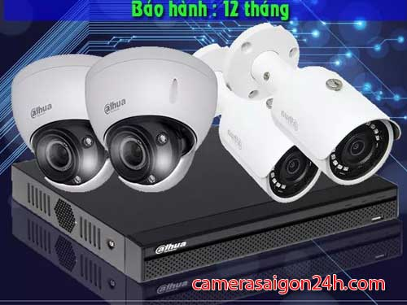
công ty lắp camera quan sát giá rẻ tại TPHCM chọn công ty lắp camera An Thành Phát là một trong những công ty lắp camera uy tín hàng đầu, sử dụng camera quan sát chính hãng lắp đặt camera uy tín dịch vụ chăm sóc khách hàng tốt nhất, luôn hổ trợ khách hàng nhanh chống hiệu quả.
LẮP CAMERA WIFI GIÁ RẺ 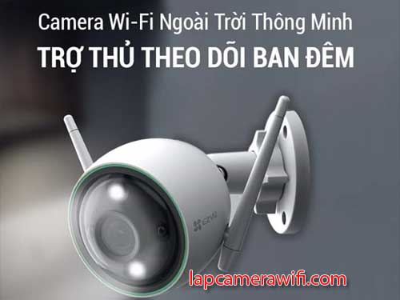
Lắp camera wifi giá rẻ ổn định dịch vụ lắp đặt camera wifi chuyên nghiệp ổn định, Công ty camera An Thành Phát chuyên sử dụng tư vấn khách hàng sử dụng những dòng camera quan sát chính hãng ổn định, Lắp camera wifi giá rẻ giám sát qua điện thoại từ xa bằng wifi 3g là giải pháp tiêt kiệm.
CÔNG TY CAMERA GIÁ RẺ 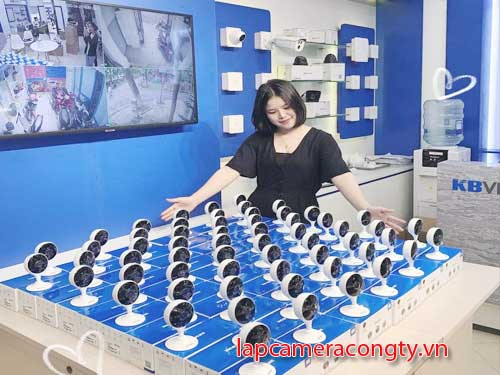
Công ty lắp camera quan sát uy tín tại TPHCM một trong những công ty có dịch vụ lắp camera quan sát chất lượng có trach nhiệm trong khu vực tphcm, An Thành Phát camera là công ty có đối tác thương hiệu ổn định, dịch vụ tốt kỹ thuật giàu kinh nghiêm đảm bảo dịch vụ tốt hoàn hảo cho mọi khách hàng.
CAMERA GIÁM SÁT 360 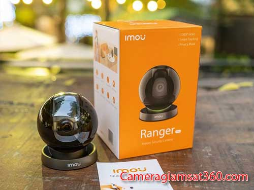
Lắp camera giám sát 360 giám sát từ xa là một trong những giải pháp hiệu quả quản lý và bảo vệ An Ninh Hiện nay, Lắp Đặt camera giám sát cho gia đình cửa hàng bạn có thể giám sát mọi lúc mọi nơi dịch vụ lắp camera giám sát hình ảnh HD công nghệ mới giá rẻ, lắp camera giám sát tiết kiệm chi phí ổn định hiêu quả cao.
LẮP CAMERA QUẬN 1 GIÁ RẺ 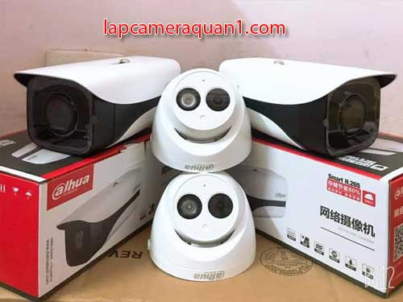
Lắp camera quận 1 giá rẻ chuyên thi công lắp camera quan sát giá rẻ chất lượng FULL HD 1080P uy tín hàng đầu, dịch vụ lắp camera quan sát quận 1 giá rẻ với chất lượng tốt, lắp camera quan sát quận 1 chất lượng HD sử dụng camera chính hãng cho gia đình văn phòng cửa hàng.
LẮP ĐẶT CAMERA QUẬN 2 
Lắp camera quận 2 cho văn phòng cửa hàng gia đình, dịch vụ lắp camera quan sát tại quận 2 chuyên sử dụng camera quan sát giá rẻ hình ảnh HD. lắp camera quan sát giá rẻ tại quận 2 cho căn hộ cửa hàng, lắp camera cho biệt thự tại quận 2 với hình ảnh HD công nghệ mới bảo hành 2 năm.
CAMERA QUAN SÁT QUÂN 3 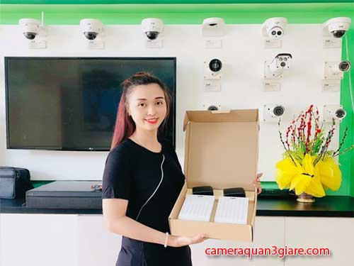
Lắp dặt camera quan sát giá rẻ tại quân 3 chất lượng dịch vụ lắp camera quan sát chất lượng tốt Dịch vụ lắp camera quan sát quận 3 uy tín hình ảnh sáng đẹp , Lắp camera quận 3 uy tín Camera giám sát chất lượng tốt Công ty lắp camera giá rẻ chất lượng tốt.
LẮP CAMERA QUẬN 4 UY TÍN 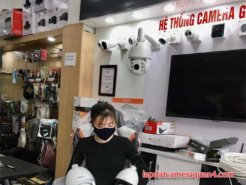
Công ty lắp camera quan sát tại quận 4 giá rẻ camera giám sát từ xa công nghệ mới sửa chửa lắp đặt camera quan sát giá rẻ tại quận 4 công nghệ mới chuyên lắp camera quan sát quận 4 chuyên lắp cho văn phòng giá rẻ chất lượng tốt, chuyên thi công camera văn phòng giá rẻ chất lượng.
LẮP CAMERA QUẬN 5 GIÁ RẺ 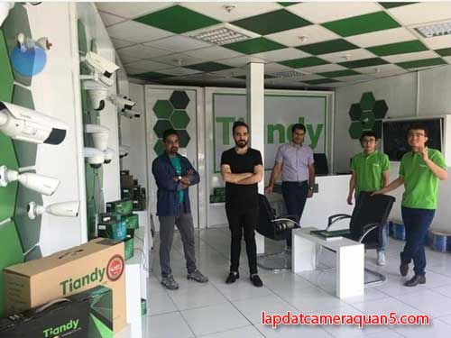
Lắp camera quan sát tại quận 5 uy tín dịch vụ công ty camera An Thành Phát luôn mang đến quý khách hàng lắp camera giám sát tại quận 5 giá rẻ chất lượng bảo trì bảo hành hoàn hảo nhất, Công ty lắp camera quận 5 giá rẻ nhanh chống sử dụng camera chính hãng tiêt kiệm chi phí ổn định.
LẮP ĐẶT CAMERA QUẬN 6 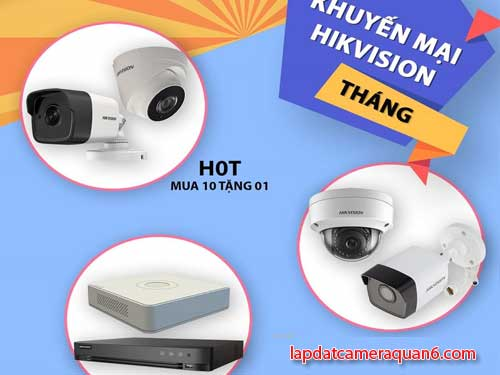
Dịch vụ lắp đặt sử chửa camera tại quận 6 giá rẻ uy tín, chuyên lắp camera quan sát tại cửa hàng chất lượng HD giám sát qua điện thoại tại quận 6, công ty lắp camera quan sát giá rẻ uy tín tại quận 6 giám sát từ xa hình ảnh chât lượng độ bền và tuổi thọ cao, Lắp đặt nhanh bảo trì bảo hành uy tín giá rẻ.
LẮP CAMERA QUAN SÁT QUẬN 7 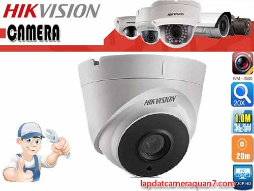
Tìm hiểm chọn lựa chông ty lắp camera quan sát uy tín tại quận 7 để sử dụng dịch vụ lắp đặt camera quan sát tốt nhất , liên hệ lắp đăt camera quan sát tại quận 7 An Thành Phát là một trong những công ty camera quan sát chuyên nghiệp uy tín dịch vụ lắp camera giám sát trong ngày chất lượng.
CÔNG TY CAMERA QUẬN 8 
Công ty lắp camera quận 8 giá rẻ An Thành Phát luôn mang đến khách hãng những giải pháp camera quan sát tại quận 8 gí rẻ ổn định tiết kiệm chi phí, lắp camera nhanh chống trong ngày, Lắp đặt camera quan sát wifi tại quận 8 giám sát qua điện thoại từ xa ổn định với công nghệ tiên tiết ít lỗi.
CAMERA QUẬN 9 GIÁ RẺ 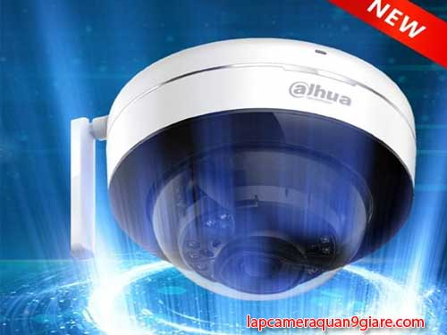
Tư vấn lắp camera quận 9 tân nơi giá rẻ, sử dụng camera quan sát chính hãng chất lượng tốt, giám sát ổn định từ xa, lắp camera quận 9 uy tín nhất ổn định nhất tại An Thành Phát showroom lắp camera quận 9 giá rẻ chất lượng dịch vụ lắp camera nhanh chống ổn định, bảo hành tận nơi tại khu vực quận 9.
LẮP CAMERA QUẬN 10 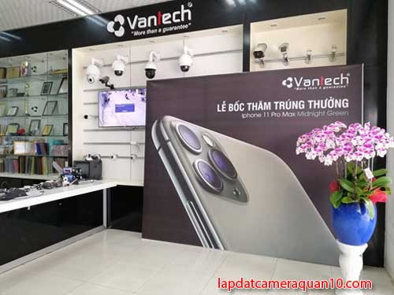
Chuyên tư vấn lắp đặt thi công camera quan sát tại quận 10 giá rẻ giám sát qua điện thoại bằng wifi 3G, 4G từ xa, Chuyên lắp camera quan sát cho cửa hàng văn phòng gia đình tại quận 10, lắp camera quận 10 giá rẻ thương hiệu tốt KBVISION, HIKVISION , Dahua thương hiệu camera quan sát hàng đầu.
LẮP CAMERA QUẬN 11 GIÁ RẺ 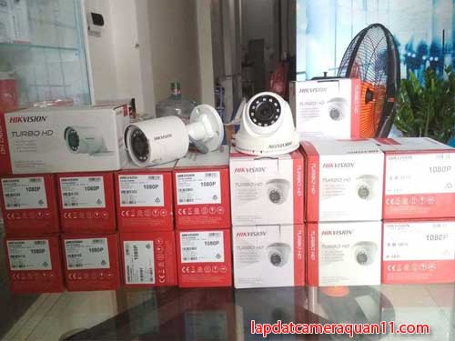
Công ty lắp camera quan sát tại quận 11 giá rẻ giám sát qua điện thoại bằng wifi 3g, dịch vụ lắp camera quan sát ổn định chất lượng tốt, An Thành Phát hình ảnh chất lượng tốt ổn định, Lắp camera quan sát tại quận 11 giá rẻ thương hiệu hàng đầu dịch vụ bảo hành 24 tháng tân nơi. giám sát ổn định thừ xa.
LẮP ĐẶT CAMERA QUẬN 12 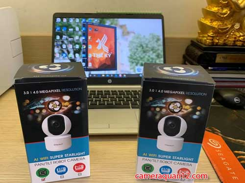
Lắp camera quan sát tại quận 12 giá rẻ chọn công ty camera An Thành Phát với nhiều năm kinh nghiệm lắp camera quan sát cho gia đình văn phòng và nhà xưởng tại quận 12 với hình ảnh HD công nghệ mới với dịch vụ lắp camera chất lượng uy tín. Công ty camera uy tín tại quận 12 chất lượng lắp đặt nhanh.
LẮP CAMERA BÌNH THẠNH 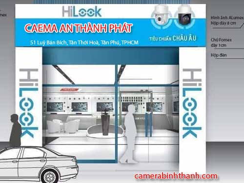
Lắp camera quan sat Bình Thạnh Uy tín tại địa chỉ 152 ung văn khiêm với nhiều sản phẩm camera quan sát chính hãng thương hiệu tốt. Lắp đặt sửa chửa bảo trì camera quan sát tại Quận Bình Thạnh uy tín sản phẩm camera quan sát qua điện thoại bằng wifi 3g với chất lượng hình ảnh HD công nghệ mới, lắp đặt nhanh.
LẮP CAMERA BÌNH TÂN GIÁ RẺ 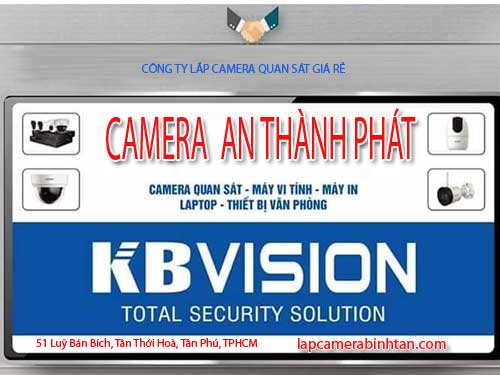
An Thành Phát là một trong những công ty chuyên lắp camera giá rẻ tại Quận Bình Tân với chi phí thấp và kỹ thuật nhiều kinh nghiệm, lắp camera quan sát Bình Tân An Thành phát là lựa chọn cho hệ thống camera chất lượng ổn định giám sát từ xa qua điện thoại uy tín, Lắp camera Bình Tân giá rẻ sản phẩm camera chính hãng.
LẮP CAMERA TÂN BÌNH 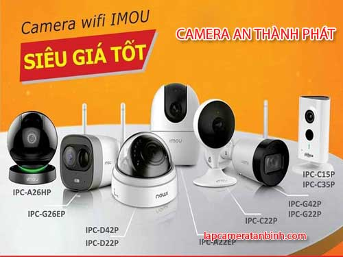
Lắp camera quan sát tại Tân Bình gí rẻ sử dụng camera quan sát chính hãng chất lượng tốt giám sát từ xa ổn định, Chuyên thi công lắp camera quan sát cửa hàng văn phòng tại quận Tân Bình Với nhiều kinh nghiệm trong quá trình lắp dặt, đảm bảo hệ thống camera quan sát hoặt động ổn định xuyên suốt, công ty camera Tân Bình Uy tín.
CAMERA QUAN SÁT TẠI HÓC MÔN 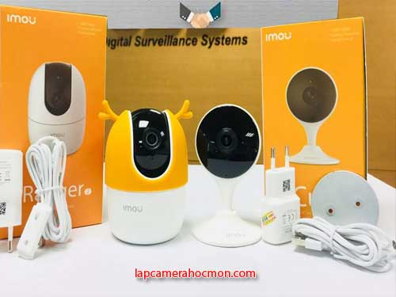
Quận Hóc môn là một trong những quận huyên tốc độ phát triển cao lắp đặt camera quan sát tại Quận Hóc Môn cũng có nhiều lựa chọn trong đó An Thành Phát là một trong những công ty camera hàng đầu chuyên thi công lắp đặt camera chính hãng giám sát từ xa hổ trợ khách hàng tốt nhất tại Hóc môn củ chi, Công ty lắp camera tại hóc môn giá rẻ.
LẮP CAMERA TÂN PHÚ GIÁ RẺ 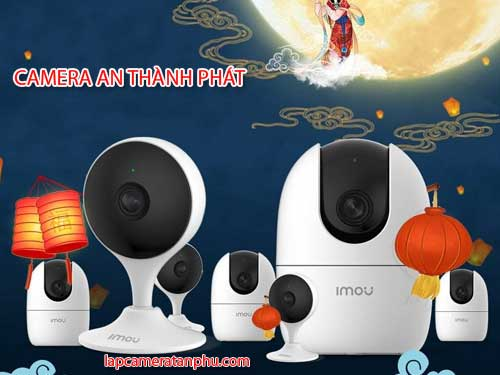
Lắp camera quan sát tại quận Tân phú cũng có nhiều loại hình lắp đặt camera quan sát khác nhau, bao gồm lắp camera gia đình văn phòng và cửa hàng tại quận tân phú. Lắp camera quan sát Phú Thường dùng những thương hiệu camera như HIKVISION, DaHua, Camera KBVISION là những thương hiệu camera quan sát chất lượng khách hàng nên lựa chọn tại Tân Phú.
LẮP MỚI CAMERA QUAN SÁT GIÁ RẺ 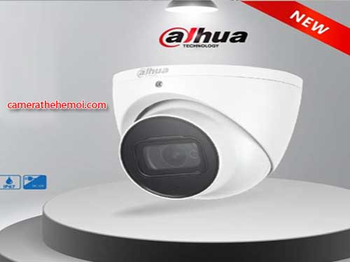
Lắp đặt mới hệ thống camera quan sát với giá rẻ công nghệ mới chất lượng hình ảnh HD Giám sát qua điện thoại tư xa ổn định, Lắp mới nâng cấp camera quan sát chất lượng tốt chọn lựa những dòng sản phẩm camera quan sát chính hãng dịch vụ tốt, lắp đặt miễn phí nhân công khi triển khai toàn bộ hệ thống camera quan sát với dịch vụ tốt ổn định trong khu vực TPHCM.
CAMERA NHA TRANG GIÁ RẺ 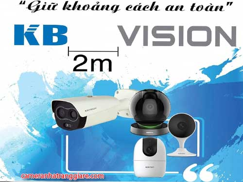
Công ty lắp camera quan sát tại nha trang uy tín dịch vụ lắp đặt sửa chửa camera quan sát uy tín tại tp nha trang và tỉnh khánh hòa, dịch vụ lắp đặt camera quan sát uy tín sử dụng camera giám sát qua điện thoại chính hãng chất lượng thương hiệu camera quan sát hàng đầu uy tín nhất tại tp nha trang công ty camera An Thành Phát uy tín chất lượng hàng đầu.
GIÁ LẮP CAEMRA QUAN SÁT 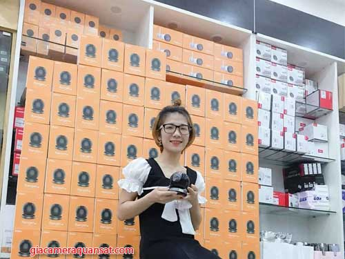
Công ty lăp camera quan sát chính hãng giá rẻ sử dụng camera thương hiệu tốt hàng đầu như Camera KBVISION,Camera HIKVISION, camera Dahua Camera Vantech, Lắp đặt miễn phí dịch vụ bảo hành 24 tháng chiết khấu cao từ chính hãng luôn mang đến khách hàng những sản phẩm dịch vụ tốt nhất, tiết kiệm chi phí nhất cho khách hàng trong khu vực tphcm.
CAMERA QUAN SÁT GIÁ RẺ CHÍNH HÃNG 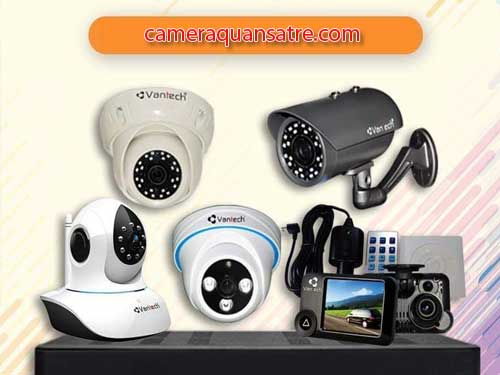
camera quan sát cao cấp, chính hãng, tính năng hiện đại, tiện ích với giá ưu đãi cùng nhiều khuyến mãi hấp dẫn công ty lắp camera quan sát giá rẻ sử dụng camera quan sát chính hãng hình ảnh HD công nghệ mới nhất hiện nay, sử dung camera quan sát thương hiệu hàng đầu , công ty camera quan sát chính hãng hình ảnh HD công nghệ giám sát siêu nét.
LẮP CAMERA AN NINH GIÁ RẺ 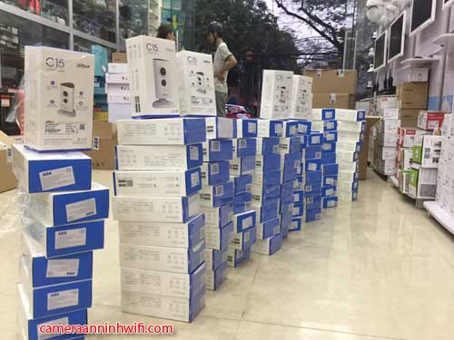
Lắp Đặt Camera An Ninh Wifi Không Dây Giá Rẻ Tại Công ty An Thành Phát, Tặng Thẻ Nhớ, Giao Ngay Và Luôn. Trọn Bộ Camera An Ninh Cho Gia Đình Có Dây Nhiều Ưu Đãi, Uy Tín, Giảm 49% Chỉ Hôm Nay. Bảo Hành Chuyên Nghiệp. Lỗi Là Đổi Trong 1 Năm. Giao Hàng Nhanh Chóng. hổ trợ lắp đăt camera an ninh wifi chính hãng hình ảnh sắt nét Uy tín
PHÂN PHỐI CAMERA QUAN SÁT GIÁ RẺ 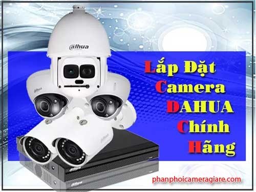
công Ty Phân Phối camera quan sát chính hãng hàng đầu là nhà phân phối các dòng camera uy tín hàng đầu Việt Nam. Chúng tôi đang có chương trình mở rộng đại lý trên toàn quốc, với nhiều ưu đãi hấp dẫn. Kiểu: Trong Nhà, Ngoài Trời, Wifi, Không Dây, Xoay 360, Dùng Thẻ Nhớ, Kbvision, Hikvision dịch vụ phân phối và cung cấp camera quan sát chính hãng
LẮP CAMERA QUAN SÁT BÌNH DƯƠNG 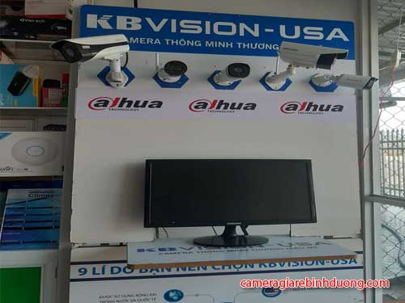
Lắp đặt camera giá rẻ tại Bình Dương uy tín giá rẻ công nghệ mới hình ảnh HD công nghệ mới, lắp camera an ninh quan sát ngoài trời để theo dõi tình hình giao thông, chăm xe ngoài tiệm, khách hàng ở quán miễn phí lắp đặt camera quan sát tại khu vực Dĩ An, Bỉnh Dương, và các khu vưc lân cận, tư vấn khảo sát giải pháp lắp camera quan sát tiết kiệm.
CAMERA QUAN SÁT GÒ VÂP 
Lắp Đặt CAMERA Quan Sát Quận Gò Vấp nhanh và rẻ Nhất sử dụng camera quan sát chính hãng, Công ty chuyên lắp camera quan sát khu vưc gò vấp cho văn phòng gia đình cửa hàng, sử dụng camera quan sát công nghệ mới, lắp camera quan sát gò vấp tiết kiệm chi phí dịch vụ sau bán hàng tốt nhất, Camera quan sát sử dụng công nghệ mới giám sát ổn dịnh.
CÔNG TY LẮP CAMERA TẠI PHÚ NHUẬN 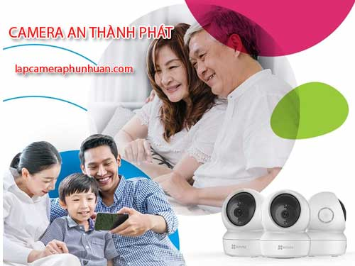
Lắp đặt camera quận Phú Nhuận là công ty camera uy tín, chuyên lắp đặt camera quan sát, hê thống an ninh, báo trộm tại quận phú nhuận. chuyên lắp camera cửa hàng văn phòng và kho hàng tại quận phú nhuận, công ty lắp camera quan sát quận phú nhuận uy tín camera chính hãng bảo hành 24 tháng dịch vụ camera quan sát tốt nhất công nghệ mới.
LẮP ĐẶT CAMERA WIFI CHÍNH HÃNG 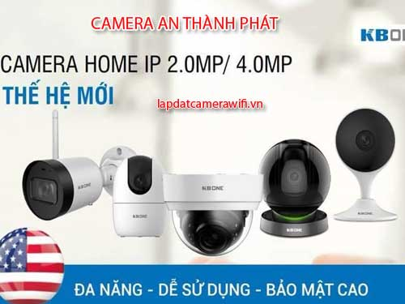
Camera ip wifi không dây là gì? Trên thực tế, kết nối wifi chỉ đạt được sự ổn định khi thiết bị phát wifi tốt và khoảng cách giữa camera wifi tới. công ty camera quan sát An Thành Phát chuyên lắp camera wifi chính hãng chất lượng công nghệ mới hình ảnh FULL HD 1080P giá rẻ tiết kiệm chi phí ổn dịnh sử dụng lâu dài, camera quan sát wifi chính hãng
CÔNG NGHỆ CAMERA QUAN SÁT TỐT NHẤT 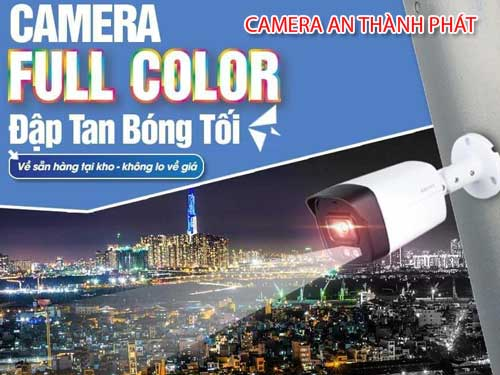
Điều quan trọng khi lắp camera quan sát là chú ý đến giải pháp và công nghệ được ứng dụng trong chiết camera quan sát, bạn nên quan tâm đến khả năng giám sát ban đêm của camera, chất lượng hình ảnh camera quan sát, công nghệ giám sát qua mạng điện thoại như thế nào để có hệ thống camera qun sát ổn định, tiết kiệm chi phí